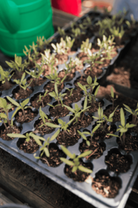
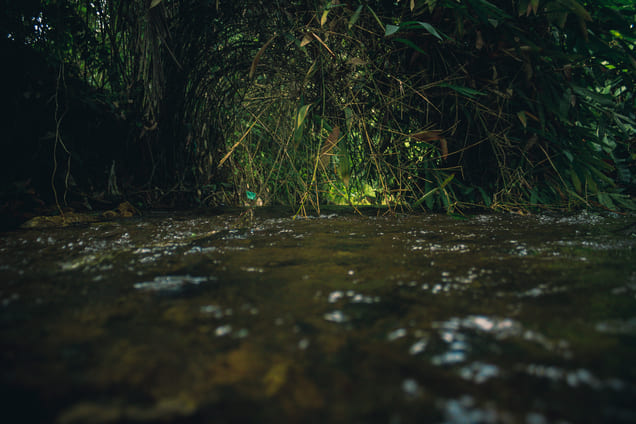

Tanam satu pohon,
Pelajari Lebih LanjutTips Penghijauan

Merawat tanaman
- 1. Pilih tanaman yang sesuai
- 2. Lakukan penyiraman min 2x. Pagi dan Sore
- 3. Tempatkan pada sinar matahari yang cukup
- 4. Beri pupuk. Min 1x 2 minggu
- 5. Pangkas daun yang sudah layu atau kering

Menjaga air agar tetap bersih
- 1. Memilah sampah
- 2. Gunakan produk ramah lingkungan
- 3. Saring air limbah sebelum dialirkan
- 4. Hemat air
- 5. Jangan tebang hutan